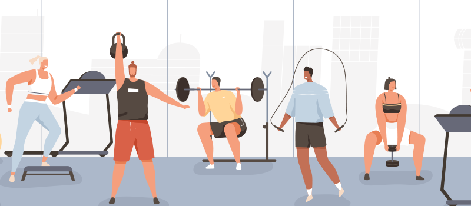

Nutrition and Diet

Proper nutrition and a balanced diet are crucial for overall health and wellness. Nutrient-rich foods provide energy, support bodily functions, and boost the immune system, reducing the risk of chronic illnesses. Healthy eating habits also enhance mental clarity, mood, and quality of sleep. By making mindful dietary choices, individuals invest in their long-term well-being, leading to a happier and more vibrant life.
Fitness and Exercise
Regular exercise is essential for overall health and wellness. It strengthens the body, supports mental health, and reduces the risk of chronic diseases. Exercise boosts mood, improves sleep, and enhances overall quality of life, leading to a more active and fulfilling existence.
Natural Remedies and Alternative Therapies

- Promotion of Natural Healing
- Individualized Treatments
- Mind-Body Connection
- Pain Management
Lifestyle and Wellness
- Avoiding Harmful Substances
- Social Connections
- Stress Management
- Adequate Sleep
Preventive Health

Preventive health is crucial for a vibrant life. Regular check-ups and healthy habits detect and prevent diseases, ensuring effective treatment. It saves lives, enhances well-being, and promotes longevity, empowering individuals to lead fulfilling, active lives.
Mental Health and Mindfulness

Mental health and mindfulness are essential for overall well-being. Practicing mindfulness reduces stress and enhances emotional stability. Prioritizing mental health fosters resilience, improves relationships, and leads to a more content and fulfilling life.